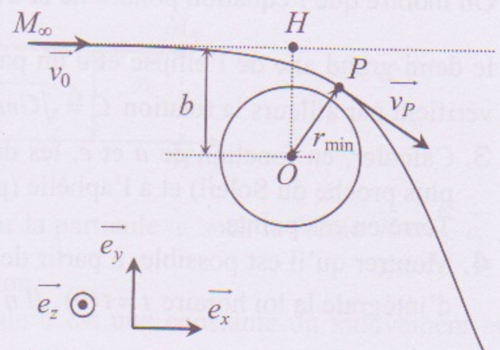

PrepOral
[MP] [Maison] [1]
Astéroïde
Enoncé
De nombreux objets, dits géocroisseurs passent à proximité de la Terre, et parfois la heurtent. On considère ici un astéroïde de masse $m$,
actuellement très éloigné de la Terre et de tout autre astre, et ayant donc une vitesse constante $\vec{v_0}$. Le prolongement de sa
trajectoire rectiligne passe à une distance b (appelée paramètre d’impact) du centre O de la Terre ; cependant lorsqu’il se rapprochera de
la Terre, l’attraction gravitationnelle de celle-ci va dévier l’astéroïde selon une trajectoire hyperbolique. On appelle périgée le point P
de cette trajectoire le plus proche du centre de la Terre.

1. Quelles sont les deux grandeurs relatives à l’astéroïde qui se conservent au cours de son mouvement ? Justifier les réponses.
2. Traduire la conservation de ces deux grandeurs entre $M_{\infty}$ et P.
3. En déduire la distance minimale d’approche $r_{min}=OP$.
4. Faire l’application numérique pour $v_0 = 2, 0 \; km.s^{-1}$ et $b = 140 \; 000 \; km$.
Commentaires
Encore jamais posé !